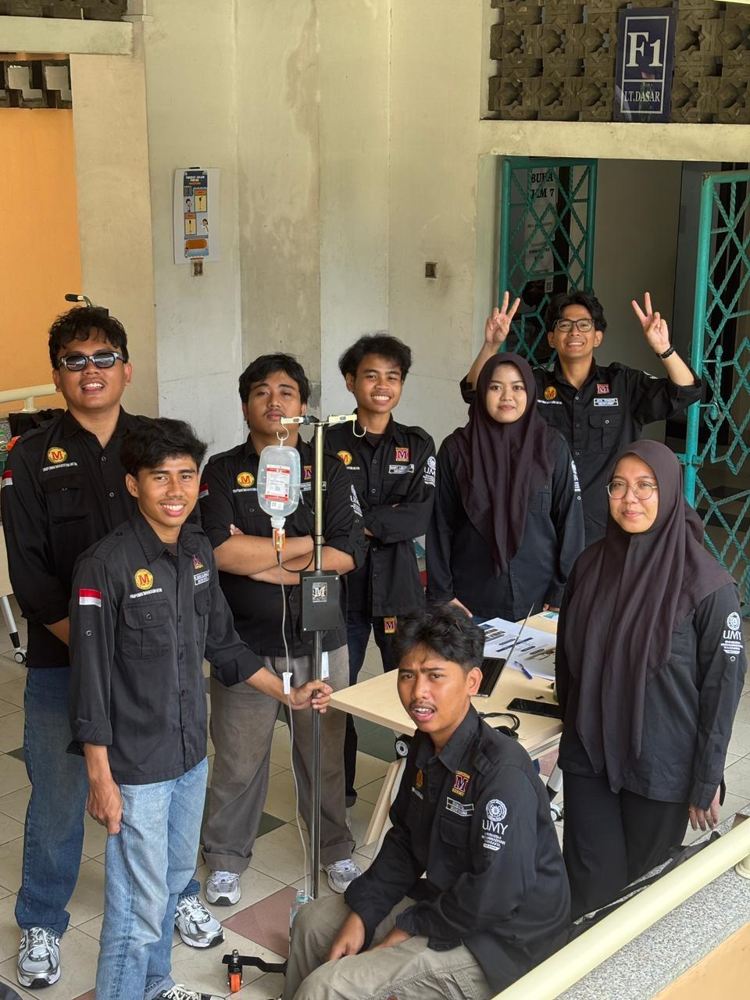
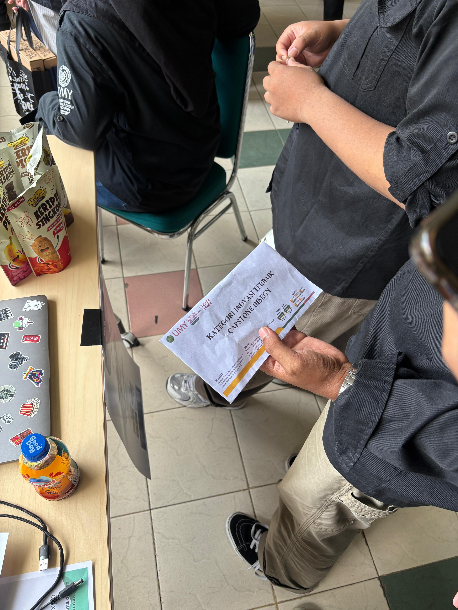

01


CAPSTONE DESIGN · 2026
SMART IV STAND
Smart IV stand project developed as an engineering design project, using sensing and system integration concepts.
🏆 Juara I APSTM-PTMA Capstone Design Competition